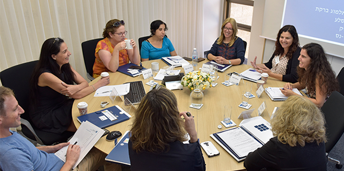

On June 26th, the Mandel Graduate Unit welcomed the fellows of Cohort 24 of the Mandel School for Educational Leadership, whose two-year program is coming to an end. Devoted to the topic of “Building Partnerships,” the event was the cohort’s first experience of a group-level continuation program for Mandel graduates.
The Graduate Unit’s group-level programs are based on the idea that professional consultation between fellows is the foundation for constructing a learning community, and that new graduates may need a supportive environment during their transition back to work after their two-year course of study. These programs include lectures and group discussions, and are based on the understanding that a unique shared discourse is formed in each cohort, which enables the group to serve as a resource for all its members as they continue their professional development.
The event began with sessions in small groups, during which the 19 fellows were introduced to the Mandel Graduate Unit, its activities, and its staff. This was followed by a workshop called “Partnerships from Stakeholders’ Perspectives,” which explored issues related to mapping and managing relationships with various stakeholders when entering a new position. The aim of the workshop was to give the fellows tools and practical knowledge to help them create partnerships and expand their circles of influence. Graduates of previous cohorts were also invited to share their experiences with the new graduates, so as to create discourse with multiple perspectives and with the benefit of hindsight.

{kind=link}